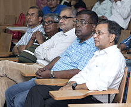
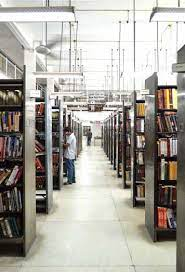

Campus life at MNNIT

MNNIT is a place for exploration of knowledge and skills
MNNIT allahabad offers a vibrant campus life. It is a safe and secure campus. Students will find the beautiful
and peaceful campus a great place to live. When they wish to do something there are a lot of choices available
to them. Students can pursue the passions they bring to the campus. Or they can take up new ones. There are many
recreational facilities, hobby clubs, sports facilities and cultural societies on campus.
In the chosen activity, whether a student is a beginner or is at an advanced level the student will have company
and will enjoy the bonding and camaraderie
MNNIT’s collaborative, hands-on, curiosity-driven ethos in the classroom and lab extends across our campus — and
beyond. On the stage or field, in makerspaces, living communities, and the surrounding area, MNNIT is where
brilliant, committed, creative people come together to learn, work, live, and play.

Central library
The Library is sanctum sanatorium in the temple of learning. It is the heart of teaching and research. The Central library has 1,22,670 Collection of books and bound periodicals. It also subscribes 14526 International e-Journals, 7998 e-Standards and 29508 IEEE e-Conference Proceedings. In order to facilitate all the readers in selecting the reading materials of their choice, the access to stacks is open to its members. Keeping the library on modern techniques, the reading materials has been classified and catalogued as Dewey Decimal Classification and Anglo- American Cataloguing Rules-II.
The entire library is now integrated with the RFID enabled Gate Security System with the help of two-pedestal antenna.
It works as nerve centre of the institution by keeping the knowledge of students and faculty members update. Information data bank is constantly updated and facilities are added. The library tries to provide best possible service to the academic community within its limited space available.
The functionaries of Central Library are guided by the setup of LLRC and Working Group

Super Computer
It is among the few technical institutions in India to house two supercomputers, PARAM 8000 and PARAM 10000.

These are the super fast computers which can run multiple programs at a very short interval of time and does complex calculations in the span of milli seconds
Computer Centre
The Computer Centre is connected to Internet through 50 Mbps BSNL and 50 Mbps Airtel , 1 Gbps NKN lease line. Server room has
7 different servers of different specifications & computational power. Students have access to about 350 computers equipped with latest
hardware and software specifications. Parallel computing laboratory with Param 10000 Super computer, Param 8000, Computer
Vision Robotics Laboratory with all suitable peripherals and software needed for the vision system have also been established.
Laboratories
The college encamps different departments which not only help in the smooth functioning of the academic activities but also provide the
budding technocrats with the latest laboratory facilities for their technical upliftment and development of professional traits. Each department
provides various lab facilities for the practical as well as research purpose.
Design Centre
The Design Center , established under the INDO-UK REC project, conducts R & D and consultancy activities in the area of CAD
/CAM, PCB Design, Image Processing and Vision Systems, Robotics, Air Pollution Control & Structural Testing etc. The center is equipped
with 24 no. of Pentium PC/AT’s networked together with 2 servers. Besides these there are other high precision equipments.